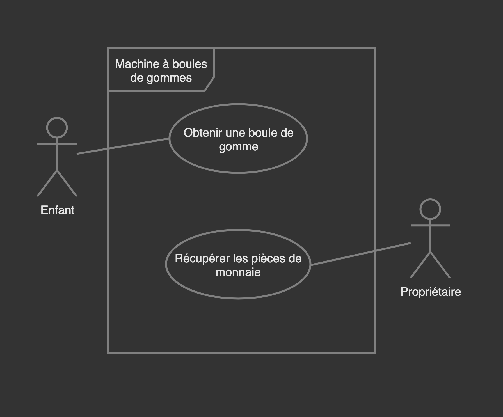

Cas d'utilisation
Eric Demers et Lévis Thériault
Mieux les développeurs comprennent un système, plus il leur est facile de le concevoir et de le construire.
Référence: Steve Adolph et al., Patterns for Effective Use Cases
L'idée de cas d'utilisation pour décrire les exigences fonctionnelles a été introduite en 1986 par Ivar Jacobson.
Ivar Jacobson
Intuitivement, un cas d'utilisation est une séquence d'actions exécutées par le système pour produire un résultat de valeur observable pour un utilisateur particulier.
Référence: Ivar Jacobson, Aspect-oriented software developpment with use cases
Popularité des cas d'utilisation
Les cas d'utilisation sont populaires en grande partie parce qu'ils racontent une histoire cohérentes sur la façon dont le système se comportera lors de son utilisation.
Référence: Alistair Cockburn, Writing Effective Use Cases
À quel moment les cas d'utilisation ajoutent-ils de la valeur?
- Le premier moment auquel les cas d'utilisation créent de la valeur est lorsqu'ils sont nommés en tant qu'objectifs utilisateur que le système pendra en charge.
- La liste des objectifs sera ensuite examinée pour discuter et évaluer les priorités au niveau du développement du système.
Référence: Alistair Cockburn, Writing Effective Use Cases
Pour être efficace, travaillez dans l'ordre suivant
- Acteurs et objectifs: Énumérez quels acteurs et quels objectifs le système soutiendra.
- Scénario principal (succès): Pour les cas d'utilisation que vous avez choisi de poursuivre esquissez le scénario de réussite principal.
- Condition d'échec: Réfléchissez à tous les échecs qui pourraient survenir. Rédigez complètement cette liste avant de déterminer comment le système doit les gérer.
- Gestion des échecs: Gérer enfin les échecs. Écrivez comment le système est censé répondre à chacun des échecs.
Référence: Alistair Cockburn, Writing Effective Use Cases
Trois types d'acteurs
- L'acteur principal: Il a des buts d'utilisateur
- L'acteur auxiliaire: Il fournit un service au système
- L'acteur hors champ: Il a un intérêt dans le comportement du cas d'utilisation, sans être un acteur principal ou auxilière
Les cas d'utilisation doivent montrer comment le système protège les intérêts de ces parties prenantes.
Nommez les cas d'utilisation
- Commencez par un verbe à l'infinitif.
- Exemples: Traiter une vente, Réserver un voyage, S'inscrire à un cours
Objectif complet et unique
Le test du processus d'affaire élémentaire
Tâche effectuée par une personne en un lieu et un temps donnés, en réponse à un événement, et qui ajoute une valeur commerciale mesurable et laisse les données dans un état cohérent.
Précis et lisible
Rédigez le cas d'utilisation pour qu'il soit suffisamment lisible pour que les parties prenantes prennent la peine de le lire et de l'évaluer, et suffisamment précis pour que les développeurs comprennent ce qu'ils construisent.
Référence: Steve Adolph et al., Patterns for Effective Use Cases
Scénario principal (succès) et étapes
Le scénario est composé d'étapes, lesquelles sont de trois sortes:
- Une interaction entre acteurs.
- Une validation (généralement par le système).
- Un changement d'état du système.
En général, la première étape d'un cas d'utilisation n'obéit pas à cette classification, mais indique l'événement qui déclenche le scénario.
Référence: Craig Larman et al., UML 2 et les design patterns
Scénario principal (succès) et étapes
Exemple:
- Le Client arrive à la caisse avec les articles qu'il souhaite acheter.
- Le Caissier commence une nouvelle vente.
- Le Caissier entre le code de l'article.
- Le Système enregistre l'article et présente sa description, son prix et le total en cours.
Le Caissier répète les étapes 3 et 4 jusqu'à épuisement des articles.
- ...
Référence: Craig Larman et al., UML 2 et les design patterns